本章目录
- This chapter covers
- 7.1 Introduction to instruction fine-tuning
- 7.2 Preparing a dataset for supervised instruction fine-tuning
- Exercise 7.1 Changing prompt styles
- 7.3 Organizing data into training batches
- Exercise 7.2 Instruction and input masking
- 7.4 Creating data loaders for an instruction dataset
- 7.5 Loading a pretrained LLM
- 7.6 Fine-tuning the LLM on instruction data
- Dealing with hardware limitations
- Exercise 7.3 Fine-tuning on the original Alpaca dataset
- 7.7 Extracting and saving responses
- ### Instruction:
- ### Input:
- Correct response:
- Model response:
- ### Instruction:
- Correct response:
- Model response:
- ### Instruction:
- Correct response:
- Model response:
- Conversational performance
- 7.8 Evaluating the fine-tuned LLM
- Using larger LLMs via web APIs
- Alternative Ollama models
- Running the code in a new Python session
- Dataset response:
- Model response:
- Score:
- Dataset response:
- Model response:
- Score:
- Dataset response:
- Model response:
- Score:
- Exercise 7.4 Parameter-efficient fine-tuning with LoRA
- 7.9 Conclusions
- 7.9.1 What’s next?
- 7.9.2 Staying up to date in a fast-moving field
- 7.9.3 Final words
- Summary
Fine-tuning to follow instructions#
This chapter covers#
Previously, we implemented the LLM architecture, carried out pretraining, and imported pretrained weights from external sources into our model. Then, we focused on fine-tuning our LLM for a specific classification task: distinguishing between spam and non-spam text messages. Now we’ll implement the process for fine-tuning an LLM to follow human instructions, as illustrated in figure 7.1. Instruction fine-tuning is one of the main techniques behind developing LLMs for chatbot applications, personal assistants, and other conversational tasks.
204
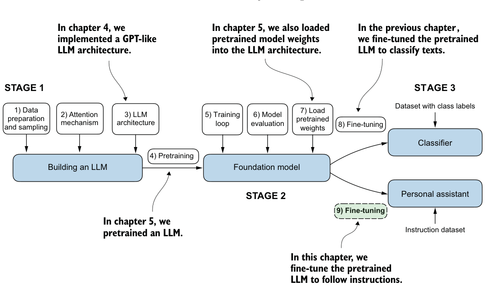
Figure 7.1 shows two main ways of fine-tuning an LLM: fine-tuning for classification (step 8) and fine-tuning an LLM to follow instructions (step 9). We implemented step 8 in chapter 6. Now we will fine-tune an LLM using an instruction dataset.
7.1 Introduction to instruction fine-tuning#
We now know that pretraining an LLM involves a training procedure where it learns to generate one word at a time. The resulting pretrained LLM is capable of text completion, meaning it can finish sentences or write text paragraphs given a fragment as input. However, pretrained LLMs often struggle with specific instructions, such as “Fix the grammar in this text” or “Convert this text into passive voice.” Later, we will examine a concrete example where we load the pretrained LLM as the basis for instruction fine-tuning, also known as supervised instruction fine-tuning.
Here, we focus on improving the LLM’s ability to follow such instructions and generate a desired response, as illustrated in figure 7.2. Preparing the dataset is a key aspect of instruction fine-tuning. Then we’ll complete all the steps in the three stages of the instruction fine-tuning process, beginning with the dataset preparation, as shown in figure 7.3.
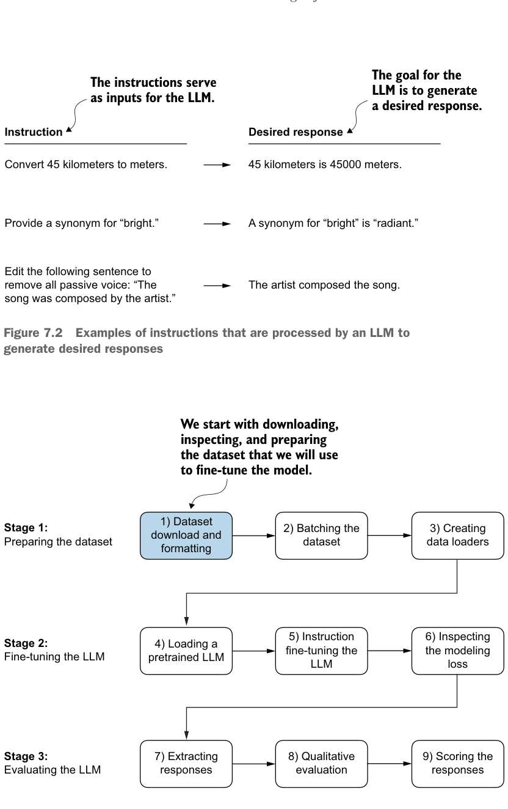
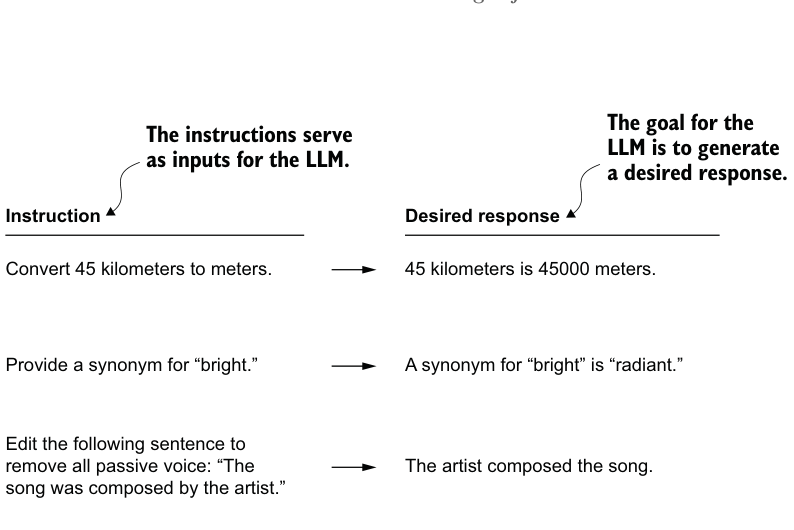
Listing 7.1Downloading the dataset
7.2 Preparing a dataset for supervised instruction fine-tuning#
Let’s download and format the instruction dataset for instruction fine-tuning a pretrained LLM. The dataset consists of 1,100 instruction–response pairs similar to those in figure 7.2. This dataset was created specifically for this book, but interested readers can find alternative, publicly available instruction datasets in appendix B.
The following code implements and executes a function to download this dataset, which is a relatively small file (only 204 KB) in JSON format. JSON, or JavaScript Object Notation, mirrors the structure of Python dictionaries, providing a simple structure for data interchange that is both human readable and machine friendly.
代码旁注 1 条
- Skips download if file was already downloaded
import json
import os
import urllib
def download_and_load_file(file_path, url):
if not os.path.exists(file_path):
with urllib.request.urlopen(url) as response:
text_data = response.read().decode("utf-8")
with open(file_path, "w", encoding="utf-8") as file:
file.write(text_data)
else:
with open(file_path, "r", encoding="utf-8") as file:
text_data = file.read()
with open(file_path, "r") as file:
data = json.load(file)
return data
file_path = "instruction-data.json"
url = (
"https://raw.githubusercontent.com/rasbt/LLMs-from-scratch"
"/main/ch07/01_main-chapter-code/instruction-data.json"
)data = download_and_load_file(file_path, url)
print("Number of entries:", len(data))The output of executing the preceding code is
Number of entries: 1100The data list that we loaded from the JSON file contains the 1,100 entries of the instruction dataset. Let’s print one of the entries to see how each entry is structured:
print("Example entry:\n", data[50])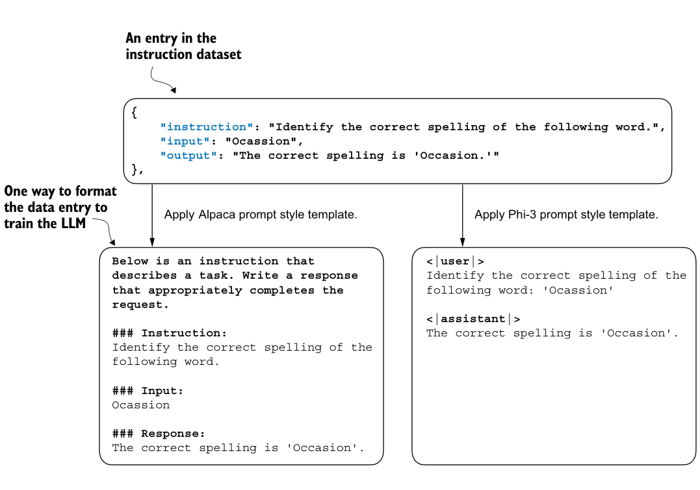
The content of the example entry is
Example entry:
{'instruction': 'Identify the correct spelling of the following word.',
'input': 'Ocassion', 'output': "The correct spelling is 'Occasion.'"}As we can see, the example entries are Python dictionary objects containing an 'instruction', 'input', and 'output'. Let’s take a look at another example:
print("Another example entry:\n", data[999])Based on the contents of this entry, the 'input' field may occasionally be empty:
Another example entry:
{'instruction': "What is an antonym of 'complicated'?",
'input': '',
'output': "An antonym of 'complicated' is 'simple'."}Instruction fine-tuning involves training a model on a dataset where the input-output pairs, like those we extracted from the JSON file, are explicitly provided. There are various methods to format these entries for LLMs. Figure 7.4 illustrates two different
Listing 7.2Implementing the prompt formatting function
example formats, often referred to as prompt styles, used in the training of notable LLMs such as Alpaca and Phi-3.
Alpaca was one of the early LLMs to publicly detail its instruction fine-tuning process. Phi-3, developed by Microsoft, is included to demonstrate the diversity in prompt styles. The rest of this chapter uses the Alpaca prompt style since it is one of the most popular ones, largely because it helped define the original approach to fine-tuning.
Exercise 7.1 Changing prompt styles #
After fine-tuning the model with the Alpaca prompt style, try the Phi-3 prompt style
shown in figure 7.4 and observe whether it affects the response quality of the model.
Let’s define a format_input function that we can use to convert the entries in the data list into the Alpaca-style input format.
def format_input(entry):
instruction_text = (
f"Below is an instruction that describes a task. "
f"Write a response that appropriately completes the request."
f"\n\n### Instruction:\n{entry['instruction']}"
)
input_text = (
f"\n\n### Input:\n{entry['input']}" if entry["input"] else ""
)
return instruction_text + input_textThis format_input function takes a dictionary entry as input and constructs a formatted string. Let’s test it to dataset entry data[50], which we looked at earlier:
model_input = format_input(data[50])
desired_response = f"\n\n### Response:\n{data[50]['output']}"
print(model_input + desired_response)The formatted input looks like as follows:
Below is an instruction that describes a task. Write a response that
appropriately completes the request.
### Instruction:
Identify the correct spelling of the following word.
### Input:
Ocassion
### Response:
The correct spelling is 'Occasion.'Listing 7.3
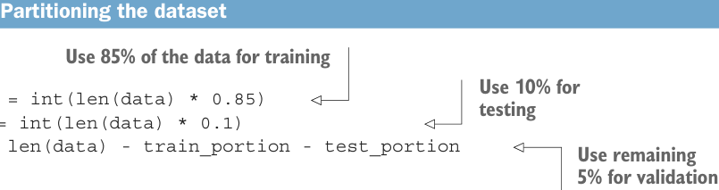
Partitioning the dataset
Note that the format_input skips the optional ### Input: section if the 'input' field is empty, which we can test out by applying the format_input function to entry data[999] that we inspected earlier:
model_input = format_input(data[999])
desired_response = f"\n\n### Response:\n{data[999]['output']}"
print(model_input + desired_response)The output shows that entries with an empty 'input' field don’t contain an ### Input: section in the formatted input:
Below is an instruction that describes a task. Write a response that
appropriately completes the request.
### Instruction:
What is an antonym of 'complicated'?
### Response:
An antonym of 'complicated' is 'simple'.Before we move on to setting up the PyTorch data loaders in the next section, let’s divide the dataset into training, validation, and test sets analogous to what we have done with the spam classification dataset in the previous chapter. The following listing shows how we calculate the portions.
代码旁注 3 条
- Use 85% of the data for training
- Use 10% for testing
- Use remaining 5% for validation
train_portion = int(len(data) * 0.85) test_portion = int(len(data) * 0.1)
val_portion = len(data) - train_portion - test_portion
train_data = data[:train_portion]
test_data = data[train_portion:train_portion + test_portion]
val_data = data[train_portion + test_portion:]
print("Training set length:", len(train_data))
print("Validation set length:", len(val_data))
print("Test set length:", len(test_data))This partitioning results in the following dataset sizes:
Training set length: 935
Validation set length: 55
Test set length: 110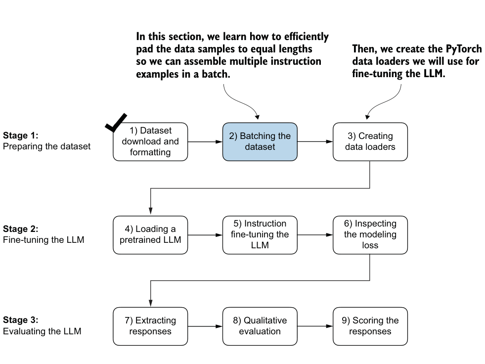
Having successfully downloaded and partitioned the dataset and gained a clear understanding of the dataset prompt formatting, we are now ready for the core implementation of the instruction fine-tuning process. Next, we focus on developing the method for constructing the training batches for fine-tuning the LLM.
7.3 Organizing data into training batches#
As we progress into the implementation phase of our instruction fine-tuning process, the next step, illustrated in figure 7.5, focuses on constructing the training batches effectively. This involves defining a method that will ensure our model receives the formatted training data during the fine-tuning process.
In the previous chapter, the training batches were created automatically by the PyTorch DataLoader class, which employs a default collate function to combine lists of samples into batches. A collate function is responsible for taking a list of individual data samples and merging them into a single batch that can be processed efficiently by the model during training.
However, the batching process for instruction fine-tuning is a bit more involved and requires us to create our own custom collate function that we will later plug into
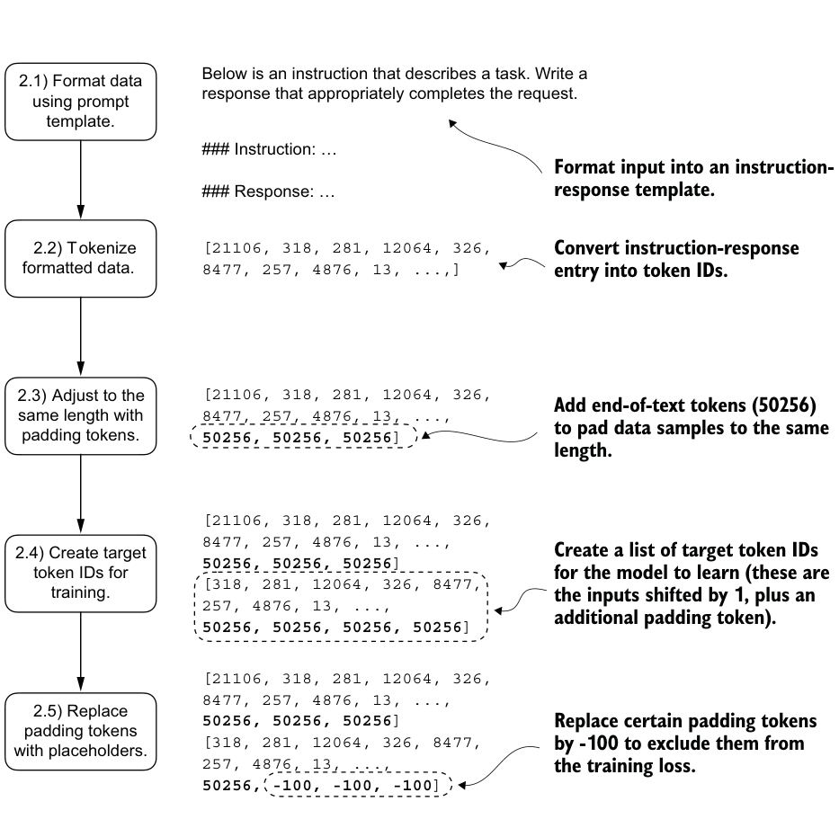
the DataLoader. We implement this custom collate function to handle the specific requirements and formatting of our instruction fine-tuning dataset.
Let’s tackle the batching process in several steps, including coding the custom collate function, as illustrated in figure 7.6. First, to implement steps 2.1 and 2.2, we code an InstructionDataset class that applies format_input and pretokenizes all inputs in the dataset, similar to the SpamDataset in chapter 6. This two-step process, detailed in figure 7.7, is implemented in the __init__ constructor method of the
InstructionDataset.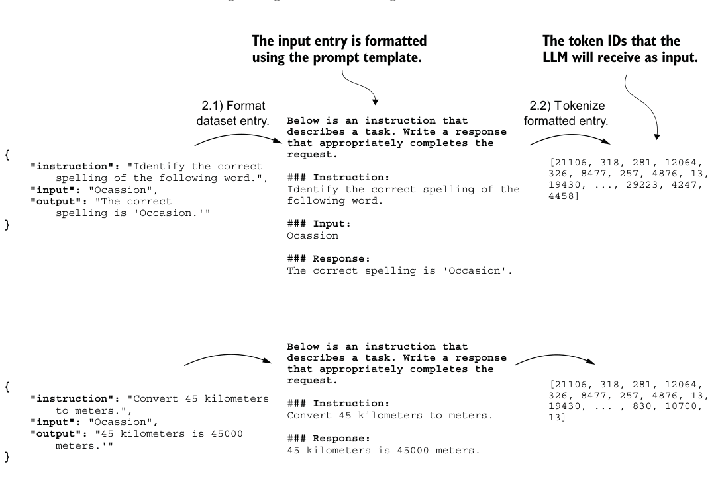
Listing 7.4Implementing an instruction dataset class
代码旁注 1 条
- Pretokenizes texts
import torch
from torch.utils.data import Dataset
class InstructionDataset(Dataset):
def __init__(self, data, tokenizer):
self.data = data
self.encoded_texts = []
for entry in data:
instruction_plus_input = format_input(entry)
response_text = f"\n\n### Response:\n{entry['output']}"
full_text = instruction_plus_input + response_text
self.encoded_texts.append(
tokenizer.encode(full_text)
)
def __getitem__(self, index):
return self.encoded_texts[index]
def __len__(self):
return len(self.data)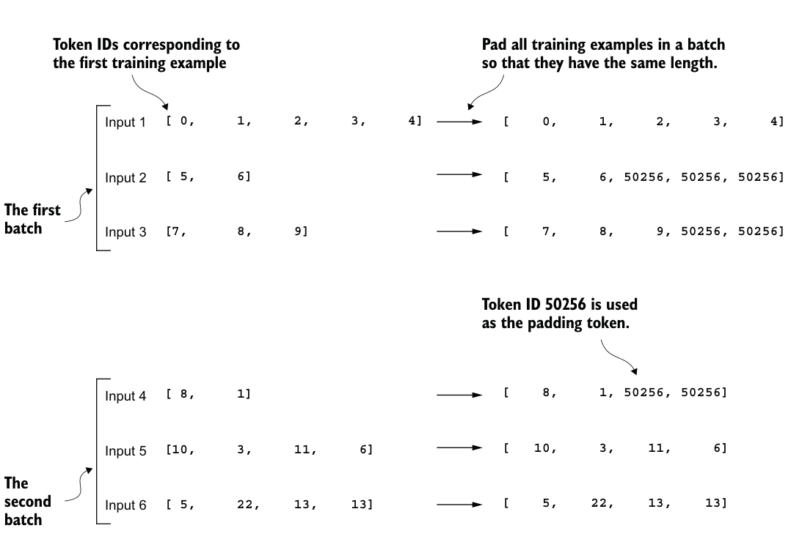
Similar to the approach used for classification fine-tuning, we want to accelerate training by collecting multiple training examples in a batch, which necessitates padding all inputs to a similar length. As with classification fine-tuning, we use the <|endoftext|> token as a padding token.
Instead of appending the <|endoftext|> tokens to the text inputs, we can append the token ID corresponding to <|endoftext|> to the pretokenized inputs directly. We can use the tokenizer’s .encode method on an <|endoftext|> token to remind us which token ID we should use:
import tiktoken
tokenizer = tiktoken.get_encoding("gpt2")
print(tokenizer.encode("<|endoftext|>", allowed_special={"<|endoftext|>"}))The resulting token ID is 50256.
Moving on to step 2.3 of the process (see figure 7.6), we adopt a more sophisticated approach by developing a custom collate function that we can pass to the data loader. This custom collate function pads the training examples in each batch to the same length while allowing different batches to have different lengths, as demonstrated in figure 7.8. This approach minimizes unnecessary padding by only extending sequences to match the longest one in each batch, not the whole dataset.
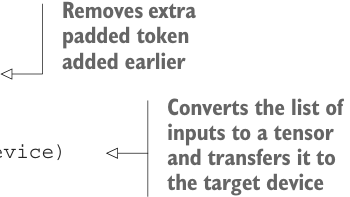
We can implement the padding process with a custom collate function:
def custom_collate_draft_1(
batch,
pad_token_id=50256,
device="cpu"
):
batch_max_length = max(len(item)+1 for item in batch)代码旁注 3 条
- Finds the longest sequence in the
- batch
- Pads and prepares inputs
inputs_lst = []
for item in batch:
new_item = item.copy()
new_item += [pad_token_id] padded = (
new_item + [pad_token_id] *代码旁注 2 条
- Removes extra padded token added earlier
- Converts the list of inputs to a tensor and transfers it to the target device
(batch_max_length - len(new_item))
)
inputs = torch.tensor(padded[:-1])
inputs_lst.append(inputs)
inputs_tensor = torch.stack(inputs_lst).to(device)
return inputs_tensorThe custom_collate_draft_1 we implemented is designed to be integrated into a PyTorch DataLoader, but it can also function as a standalone tool. Here, we use it independently to test and verify that it operates as intended. Let’s try it on three different inputs that we want to assemble into a batch, where each example gets padded to the same length:
inputs_1 = [0, 1, 2, 3, 4]
inputs_2 = [5, 6]
inputs_3 = [7, 8, 9]
batch = (
inputs_1,
inputs_2,
inputs_3
)
print(custom_collate_draft_1(batch))The resulting batch looks like the following:
tensor([[ 0, 1, 2, 3, 4],
[ 5, 6, 50256, 50256, 50256],
[ 7, 8, 9, 50256, 50256]])This output shows all inputs have been padded to the length of the longest input list, inputs_1, containing five token IDs.
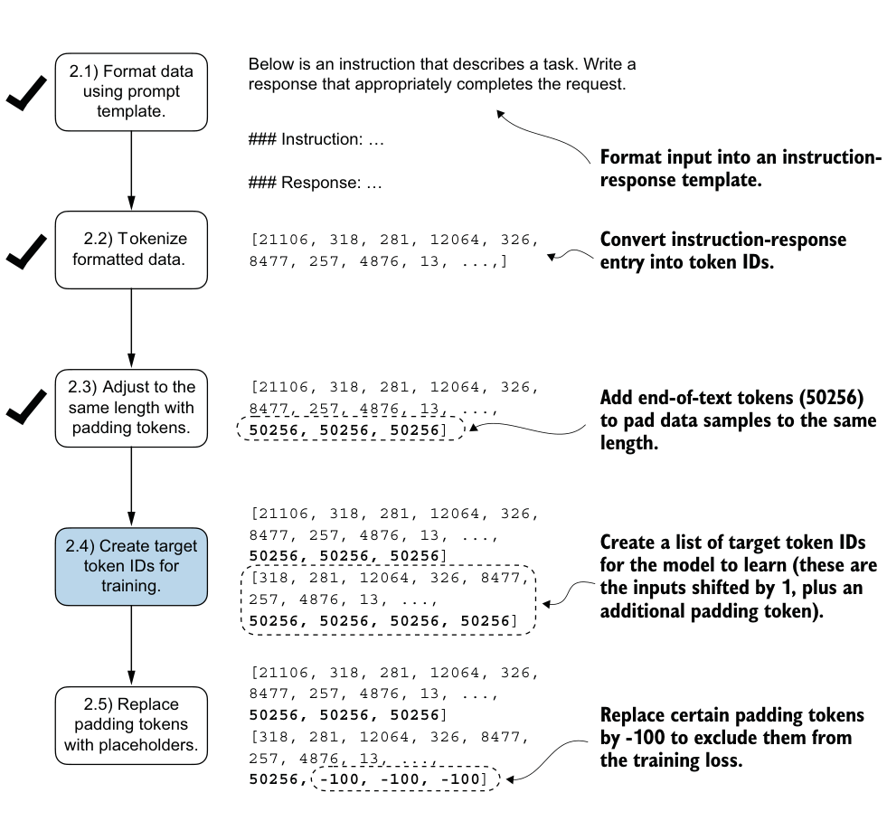
We have just implemented our first custom collate function to create batches from lists of inputs. However, as we previously learned, we also need to create batches with the target token IDs corresponding to the batch of input IDs. These target IDs, as shown in figure 7.9, are crucial because they represent what we want the model to generate and what we need during training to calculate the loss for the weight updates. That is, we modify our custom collate function to return the target token IDs in addition to the input token IDs.
Similar to the process we used to pretrain an LLM, the target token IDs match the input token IDs but are shifted one position to the right. This setup, as shown in figure 7.10, allows the LLM to learn how to predict the next token in a sequence.
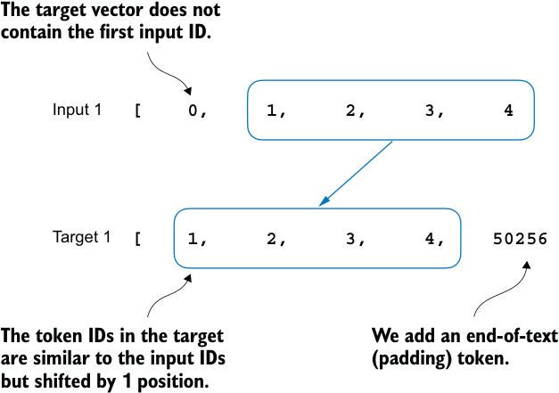
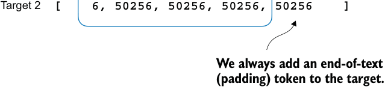
代码旁注 1 条
- The target vector does not contain the first input ID.
[ 0, 1, 2, 3, 4 ]代码旁注 1 条
- The token IDs in the target We add an end-of-text
[ 1, 2, 3, 4, 50256 ]代码旁注 2 条
- are similar to the input IDs (padding) token.
- but shifted by 1 position.
[ 5, 6, 50256, 50256, 50256 ][ 6, 50256, 50256, 50256, 50256 ]The following updated collate function generates the target token IDs from the input token IDs:
def custom_collate_draft_2(
batch,
pad_token_id=50256,
device="cpu"
):
batch_max_length = max(len(item)+1 for item in batch)
inputs_lst, targets_lst = [], []
for item in batch:
new_item = item.copy()
new_item += [pad_token_id]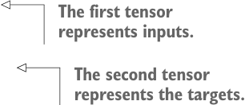
代码旁注 2 条
- Truncates the last token for inputs
- Shifts +1 to the right for targets
padded = (
new_item + [pad_token_id] *
(batch_max_length - len(new_item))
)
inputs = torch.tensor(padded[:-1])
targets = torch.tensor(padded[1:])
inputs_lst.append(inputs)
targets_lst.append(targets)
inputs_tensor = torch.stack(inputs_lst).to(device)
targets_tensor = torch.stack(targets_lst).to(device)
return inputs_tensor, targets_tensor
inputs, targets = custom_collate_draft_2(batch)
print(inputs)
print(targets)Applied to the example batch consisting of three input lists we defined earlier, the new custom_collate_draft_2 function now returns the input and the target batch:
tensor([[ 0, 1, 2, 3, 4],代码旁注 2 条
- The first tensor represents inputs.
- The second tensor represents the targets.
[ 5, 6, 50256, 50256, 50256],
[ 7, 8, 9, 50256, 50256]])
tensor([[ 1, 2, 3, 4, 50256],
[ 6, 50256, 50256, 50256, 50256],
[ 8, 9, 50256, 50256, 50256]])In the next step, we assign a -100 placeholder value to all padding tokens, as highlighted in figure 7.11. This special value allows us to exclude these padding tokens from contributing to the training loss calculation, ensuring that only meaningful data influences model learning. We will discuss this process in more detail after we implement this modification. (When fine-tuning for classification, we did not have to worry about this since we only trained the model based on the last output token.)
However, note that we retain one end-of-text token, ID 50256, in the target list, as depicted in figure 7.12. Retaining it allows the LLM to learn when to generate an endof-text token in response to instructions, which we use as an indicator that the generated response is complete.
In the following listing, we modify our custom collate function to replace tokens with ID 50256 with -100 in the target lists. Additionally, we introduce an allowed_ max_length parameter to optionally limit the length of the samples. This adjustment will be useful if you plan to work with your own datasets that exceed the 1,024-token context size supported by the GPT-2 model.
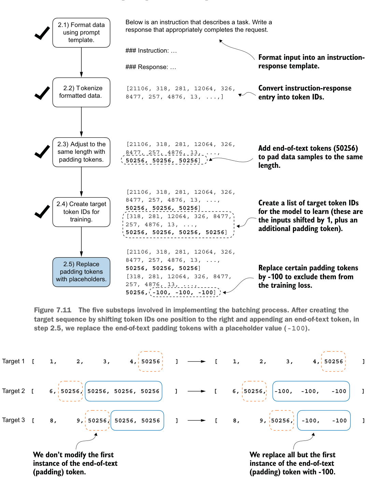
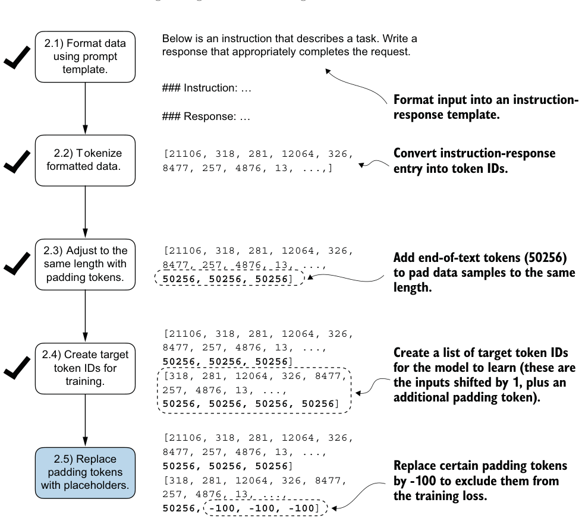
-100, while keeping the initial end-of-text token in each target sequence.
Listing 7.5Implementing a custom batch collate function
代码旁注 5 条
- Pads sequences to max_length
- Truncates the last token for inputs
- Shifts +1 to the right for targets
- Replaces all but the first padding tokens in targets by ignore_index
- Optionally truncates to the maximum sequence length
def custom_collate_fn(
batch,
pad_token_id=50256,
ignore_index=-100,
allowed_max_length=None,
device="cpu"
):
batch_max_length = max(len(item)+1 for item in batch)
inputs_lst, targets_lst = [], []
for item in batch:
new_item = item.copy()
new_item += [pad_token_id]
padded = (
new_item + [pad_token_id] *
(batch_max_length - len(new_item))
)
inputs = torch.tensor(padded[:-1])
targets = torch.tensor(padded[1:])
mask = targets == pad_token_id
indices = torch.nonzero(mask).squeeze()
if indices.numel() > 1:
targets[indices[1:]] = ignore_index
if allowed_max_length is not None:
inputs = inputs[:allowed_max_length]
targets = targets[:allowed_max_length]
inputs_lst.append(inputs)
targets_lst.append(targets)
inputs_tensor = torch.stack(inputs_lst).to(device)
targets_tensor = torch.stack(targets_lst).to(device)
return inputs_tensor, targets_tensorAgain, let’s try the collate function on the sample batch that we created earlier to check that it works as intended:
inputs, targets = custom_collate_fn(batch)
print(inputs)
print(targets)The results are as follows, where the first tensor represents the inputs and the second tensor represents the targets:
tensor([[ 0, 1, 2, 3, 4],
[ 5, 6, 50256, 50256, 50256],
[ 7, 8, 9, 50256, 50256]])
tensor([[ 1, 2, 3, 4, 50256],
[ 6, 50256, -100, -100, -100],
[ 8, 9, 50256, -100, -100]])The modified collate function works as expected, altering the target list by inserting the token ID -100. What is the logic behind this adjustment? Let’s explore the underlying purpose of this modification.
For demonstration purposes, consider the following simple and self-contained example where each output logit corresponds to a potential token from the model’s vocabulary. Here’s how we might calculate the cross entropy loss (introduced in chapter 5) during training when the model predicts a sequence of tokens, which is similar to what we did when we pretrained the model and fine-tuned it for classification:
代码旁注 2 条
- predictions for 1st token
- predictions for 2nd token
logits_1 = torch.tensor(
[[-1.0, 1.0],
[-0.5, 1.5]]
)
targets_1 = torch.tensor([0, 1]) # Correct token indices to generate
loss_1 = torch.nn.functional.cross_entropy(logits_1, targets_1)
print(loss_1)The loss value calculated by the previous code is 1.1269:
tensor(1.1269)As we would expect, adding an additional token ID affects the loss calculation:
代码旁注 1 条
- New third token ID prediction
logits_2 = torch.tensor(
[[-1.0, 1.0],
[-0.5, 1.5],
[-0.5, 1.5]]
)
targets_2 = torch.tensor([0, 1, 1])
loss_2 = torch.nn.functional.cross_entropy(logits_2, targets_2)
print(loss_2)After adding the third token, the loss value is 0.7936.
So far, we have carried out some more or less obvious example calculations using the cross entropy loss function in PyTorch, the same loss function we used in the training functions for pretraining and fine-tuning for classification. Now let’s get to the interesting part and see what happens if we replace the third target token ID with -100:
targets_3 = torch.tensor([0, 1, -100])
loss_3 = torch.nn.functional.cross_entropy(logits_2, targets_3)
print(loss_3)
print("loss_1 == loss_3:", loss_1 == loss_3)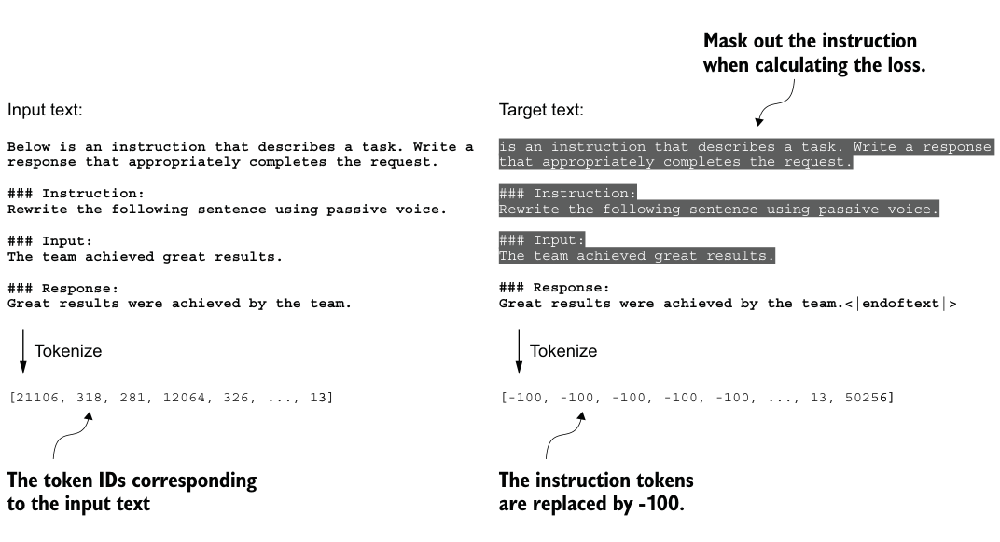
The resulting output is
tensor(1.1269)
loss_1 == loss_3: tensor(True)The resulting loss on these three training examples is identical to the loss we calculated from the two training examples earlier. In other words, the cross entropy loss function ignored the third entry in the targets_3 vector, the token ID corresponding to -100. (Interested readers can try to replace the -100 value with another token ID that is not 0 or 1; it will result in an error.)
So what’s so special about -100 that it’s ignored by the cross entropy loss? The default setting of the cross entropy function in PyTorch is cross_entropy(..., ignore_index=-100). This means that it ignores targets labeled with -100. We take advantage of this ignore_index to ignore the additional end-of-text (padding) tokens that we used to pad the training examples to have the same length in each batch. However, we want to keep one 50256 (end-of-text) token ID in the targets because it helps the LLM to learn to generate end-of-text tokens, which we can use as an indicator that a response is complete.
In addition to masking out padding tokens, it is also common to mask out the target token IDs that correspond to the instruction, as illustrated in figure 7.13. By masking out the LLM’s target token IDs corresponding to the instruction, the cross entropy loss is only computed for the generated response target IDs. Thus, the model is trained to focus on generating accurate responses rather than memorizing instructions, which can help reduce overfitting.
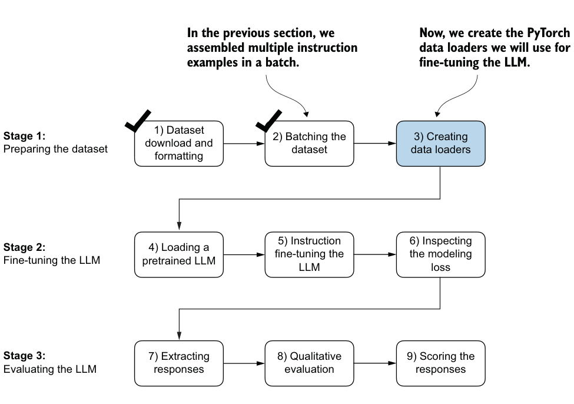
As of this writing, researchers are divided on whether masking the instructions is universally beneficial during instruction fine-tuning. For instance, the 2024 paper by Shi et al., “Instruction Tuning With Loss Over Instructions” (https://arxiv.org/abs/ 2405.14394), demonstrated that not masking the instructions benefits the LLM performance (see appendix B for more details). Here, we will not apply masking and leave it as an optional exercise for interested readers.
Exercise 7.2 Instruction and input masking#
After completing the chapter and fine-tuning the model with InstructionDataset,
replace the instruction and input tokens with the -100 mask to use the instruction
masking method illustrated in figure 7.13. Then evaluate whether this has a positive
effect on model performance.
7.4 Creating data loaders for an instruction dataset#
We have completed several stages to implement an InstructionDataset class and a custom_collate_fn function for the instruction dataset. As shown in figure 7.14, we are ready to reap the fruits of our labor by simply plugging both InstructionDataset objects and the custom_collate_fn function into PyTorch data loaders. These loaders
will automatically shuffle and organize the batches for the LLM instruction fine-tuning process.
Before we implement the data loader creation step, we have to briefly talk about
the device setting of the custom_collate_fn. The custom_collate_fn includes code to move the input and target tensors (for example, torch.stack(inputs_lst).to (device)) to a specified device, which can be either "cpu" or "cuda" (for NVIDIA GPUs) or, optionally, "mps" for Macs with Apple Silicon chips.
Previously, we moved the data onto the target device (for example, the GPU memory when device="cuda") in the main training loop. Having this as part of the collate function offers the advantage of performing this device transfer process as a background process outside the training loop, preventing it from blocking the GPU during model training.
The following code initializes the device variable:
代码旁注 1 条
- Uncomments these two lines to use the GPU on an Apple Silicon chip
device = torch.device("cuda" if torch.cuda.is_available() else "cpu")
# if torch.backends.mps.is_available():
# device = torch.device("mps")"
print("Device:", device)This will either print "Device: cpu" or "Device: cuda", depending on your machine.
Next, to reuse the chosen device setting in custom_collate_fn when we plug it into the PyTorch DataLoader class, we use the partial function from Python’s functools standard library to create a new version of the function with the device argument prefilled. Additionally, we set the allowed_max_length to 1024, which truncates the data to the maximum context length supported by the GPT-2 model, which we will fine-tune later:
from functools import partial
customized_collate_fn = partial(
custom_collate_fn,
device=device,
allowed_max_length=1024
)Next, we can set up the data loaders as we did previously, but this time, we will use our custom collate function for the batching process.
Listing 7.6Initializing the data loaders
代码旁注 2 条
- You can try to increase this number if parallel Python processes are supported
- by your operating system.
from torch.utils.data import DataLoader
num_workers = 0
batch_size = 8
torch.manual_seed(123)
train_dataset = InstructionDataset(train_data, tokenizer)
train_loader = DataLoader(
train_dataset,
batch_size=batch_size,
collate_fn=customized_collate_fn,
shuffle=True,
drop_last=True,
num_workers=num_workers
)
val_dataset = InstructionDataset(val_data, tokenizer)
val_loader = DataLoader(
val_dataset,
batch_size=batch_size,
collate_fn=customized_collate_fn,
shuffle=False,
drop_last=False,
num_workers=num_workers
)
test_dataset = InstructionDataset(test_data, tokenizer)
test_loader = DataLoader(
test_dataset,
batch_size=batch_size,
collate_fn=customized_collate_fn,
shuffle=False,
drop_last=False,
num_workers=num_workers
)Let’s examine the dimensions of the input and target batches generated by the training loader:
print("Train loader:")
for inputs, targets in train_loader:
print(inputs.shape, targets.shape)The output is as follows (truncated to conserve space):
Train loader:
torch.Size([8, 61]) torch.Size([8, 61])
torch.Size([8, 76]) torch.Size([8, 76])
torch.Size([8, 73]) torch.Size([8, 73])
...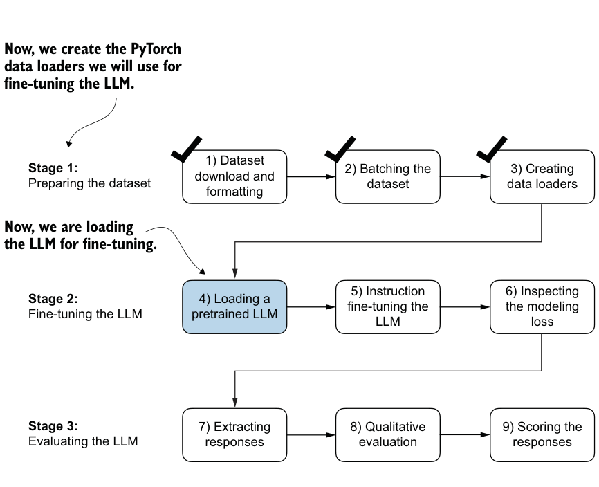
torch.Size([8, 74]) torch.Size([8, 74])
torch.Size([8, 69]) torch.Size([8, 69])This output shows that the first input and target batch have dimensions 8 × 61, where 8 represents the batch size and 61 is the number of tokens in each training example in this batch. The second input and target batch have a different number of tokens—for instance, 76. Thanks to our custom collate function, the data loader is able to create batches of different lengths. In the next section, we load a pretrained LLM that we can then fine-tune with this data loader.
7.5 Loading a pretrained LLM#
We have spent a lot of time preparing the dataset for instruction fine-tuning, which is a key aspect of the supervised fine-tuning process. Many other aspects are the same as in pretraining, allowing us to reuse much of the code from earlier chapters.
Before beginning instruction fine-tuning, we must first load a pretrained GPT model that we want to fine-tune (see figure 7.15), a process we have undertaken previously. However, instead of using the smallest 124-million-parameter model as before, we load the medium-sized model with 355 million parameters. The reason for this choice is that the 124-million-parameter model is too limited in capacity to achieve
Listing 7.7Loading the pretrained model
satisfactory results via instruction fine-tuning. Specifically, smaller models lack the necessary capacity to learn and retain the intricate patterns and nuanced behaviors required for high-quality instruction-following tasks.
Loading our pretrained models requires the same code as when we pretrained the data (section 5.5) and fine-tuned it for classification (section 6.4), except that we now
specify "gpt2-medium (355M)" instead of "gpt2-small (124M)".
from gpt_download import download_and_load_gpt2
from chapter04 import GPTModel
from chapter05 import load_weights_into_gpt
BASE_CONFIG = {
"vocab_size": 50257, # Vocabulary size
"context_length": 1024, # Context length
"drop_rate": 0.0, # Dropout rate
"qkv_bias": True # Query-key-value bias
}
model_configs = {
"gpt2-small (124M)": {"emb_dim": 768, "n_layers": 12, "n_heads": 12},
"gpt2-medium (355M)": {"emb_dim": 1024, "n_layers": 24, "n_heads": 16},
"gpt2-large (774M)": {"emb_dim": 1280, "n_layers": 36, "n_heads": 20},
"gpt2-xl (1558M)": {"emb_dim": 1600, "n_layers": 48, "n_heads": 25},
}
CHOOSE_MODEL = "gpt2-medium (355M)"
BASE_CONFIG.update(model_configs[CHOOSE_MODEL])
model_size = CHOOSE_MODEL.split(" ")[-1].lstrip("(").rstrip(")")
settings, params = download_and_load_gpt2(
model_size=model_size,
models_dir="gpt2"
)
model = GPTModel(BASE_CONFIG)
load_weights_into_gpt(model, params)
model.eval();After executing the code, several files will be downloaded:
checkpoint: 100%|██████████| 77.0/77.0 [00:00<00:00, 156kiB/s]
encoder.json: 100%|██████████| 1.04M/1.04M [00:02<00:00, 467kiB/s]
hparams.json: 100%|██████████| 91.0/91.0 [00:00<00:00, 198kiB/s]
model.ckpt.data-00000-of-00001: 100%|██████████| 1.42G/1.42G
[05:50<00:00, 4.05MiB/s]
model.ckpt.index: 100%|██████████| 10.4k/10.4k [00:00<00:00, 18.1MiB/s]
model.ckpt.meta: 100%|██████████| 927k/927k [00:02<00:00, 454kiB/s]
vocab.bpe: 100%|██████████| 456k/456k [00:01<00:00, 283kiB/s]Now, let’s take a moment to assess the pretrained LLM’s performance on one of the validation tasks by comparing its output to the expected response. This will give us a baseline understanding of how well the model performs on an instruction-following task right out of the box, prior to fine-tuning, and will help us appreciate the effect of fine-tuning later on. We will use the first example from the validation set for this assessment:
torch.manual_seed(123)
input_text = format_input(val_data[0])
print(input_text)The content of the instruction is as follows:
Below is an instruction that describes a task. Write a response that
appropriately completes the request.
### Instruction:
Convert the active sentence to passive: 'The chef cooks the meal every day.'Next we generate the model’s response using the same generate function we used to pretrain the model in chapter 5:
from chapter05 import generate, text_to_token_ids, token_ids_to_text
token_ids = generate(
model=model,
idx=text_to_token_ids(input_text, tokenizer),
max_new_tokens=35,
context_size=BASE_CONFIG["context_length"],
eos_id=50256,
)
generated_text = token_ids_to_text(token_ids, tokenizer)The generate function returns the combined input and output text. This behavior was previously convenient since pretrained LLMs are primarily designed as text-completion models, where the input and output are concatenated to create coherent and legible text. However, when evaluating the model’s performance on a specific task, we often want to focus solely on the model’s generated response.
To isolate the model’s response text, we need to subtract the length of the input instruction from the start of the generated_text:
response_text = generated_text[len(input_text):].strip()
print(response_text)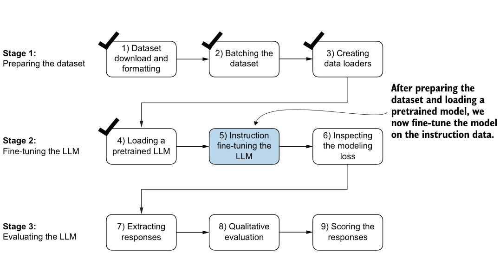
This code removes the input text from the beginning of the generated_text, leaving us with only the model’s generated response. The strip() function is then applied to remove any leading or trailing whitespace characters. The output is
### Response:
The chef cooks the meal every day.
### Instruction:
Convert the active sentence to passive: 'The chef cooks theThis output shows that the pretrained model is not yet capable of correctly following the given instruction. While it does create a Response section, it simply repeats the original input sentence and part of the instruction, failing to convert the active sentence to passive voice as requested. So, let’s now implement the fine-tuning process to improve the model’s ability to comprehend and appropriately respond to such requests.
7.6 Fine-tuning the LLM on instruction data#
It’s time to fine-tune the LLM for instructions (figure 7.16). We will take the loaded pretrained model in the previous section and further train it using the previously prepared instruction dataset prepared earlier in this chapter. We already did all the hard work when we implemented the instruction dataset processing at the beginning of
this chapter. For the fine-tuning process itself, we can reuse the loss calculation and training functions implemented in chapter 5:
from chapter05 import (
calc_loss_loader,
train_model_simple
)Before we begin training, let’s calculate the initial loss for the training and validation sets:
model.to(device)
torch.manual_seed(123)
with torch.no_grad():
train_loss = calc_loss_loader(
train_loader, model, device, num_batches=5
)
val_loss = calc_loss_loader(
val_loader, model, device, num_batches=5
)
print("Training loss:", train_loss)
print("Validation loss:", val_loss)The initial loss values are as follows; as previously, our goal is to minimize the loss:
Training loss: 3.825908660888672
Validation loss: 3.7619335651397705Dealing with hardware limitations#
Using and training a larger model like GPT-2 medium (355 million parameters) is more
computationally intensive than the smaller GPT-2 model (124 million parameters). If
you encounter problems due to hardware limitations, you can switch to the smaller
model by changing CHOOSE_MODEL = "gpt2-medium (355M)" to CHOOSE_MODEL =
"gpt2-small (124M)" (see section 7.5). Alternatively, to speed up the model training,
consider using a GPU. The following supplementary section in this book’s code repos-
itory lists several options for using cloud GPUs: https://mng.bz/EOEq.
The following table provides reference run times for training each model on various
devices, including CPUs and GPUs, for GPT-2. Running this code on a compatible GPU
requires no code changes and can significantly speed up training. For the results
shown in this chapter, I used the GPT-2 medium model and trained it on an A100
GPU.
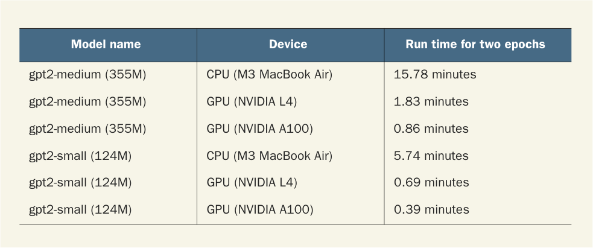
Model name Device Run time for two epochs
Listing 7.8Instruction fine-tuning the pretrained LLM
gpt2-medium (355M) CPU (M3 MacBook Air) 15.78 minutes gpt2-medium (355M) GPU (NVIDIA L4) 1.83 minutes gpt2-medium (355M) GPU (NVIDIA A100) 0.86 minutes gpt2-small (124M) CPU (M3 MacBook Air) 5.74 minutes gpt2-small (124M) GPU (NVIDIA L4) 0.69 minutes gpt2-small (124M) GPU (NVIDIA A100) 0.39 minutes
With the model and data loaders prepared, we can now proceed to train the model. The code in listing 7.8 sets up the training process, including initializing the optimizer, setting the number of epochs, and defining the evaluation frequency and starting context to evaluate generated LLM responses during training based on the first validation set instruction (val_data[0]) we looked at in section 7.5.
import time
start_time = time.time()
torch.manual_seed(123)
optimizer = torch.optim.AdamW(
model.parameters(), lr=0.00005, weight_decay=0.1
)
num_epochs = 2
train_losses, val_losses, tokens_seen = train_model_simple(
model, train_loader, val_loader, optimizer, device,
num_epochs=num_epochs, eval_freq=5, eval_iter=5,
start_context=format_input(val_data[0]), tokenizer=tokenizer
)
end_time = time.time()
execution_time_minutes = (end_time - start_time) / 60
print(f"Training completed in {execution_time_minutes:.2f} minutes.")The following output displays the training progress over two epochs, where a steady decrease in losses indicates improving ability to follow instructions and generate appropriate responses:
Ep 1 (Step 000000): Train loss 2.637, Val loss 2.626
Ep 1 (Step 000005): Train loss 1.174, Val loss 1.103
Ep 1 (Step 000010): Train loss 0.872, Val loss 0.944
Ep 1 (Step 000015): Train loss 0.857, Val loss 0.906
...
Ep 1 (Step 000115): Train loss 0.520, Val loss 0.665
Below is an instruction that describes a task. Write a response that
appropriately completes the request. ### Instruction: Convert the
active sentence to passive: 'The chef cooks the meal every day.'
### Response: The meal is prepared every day by the chef.<|endoftext|>
The following is an instruction that describes a task.
Write a response that appropriately completes the request.
### Instruction: Convert the active sentence to passive:
Ep 2 (Step 000120): Train loss 0.438, Val loss 0.670
Ep 2 (Step 000125): Train loss 0.453, Val loss 0.685
Ep 2 (Step 000130): Train loss 0.448, Val loss 0.681
Ep 2 (Step 000135): Train loss 0.408, Val loss 0.677
...
Ep 2 (Step 000230): Train loss 0.300, Val loss 0.657
Below is an instruction that describes a task. Write a response
that appropriately completes the request. ### Instruction:
Convert the active sentence to passive: 'The chef cooks the meal
every day.' ### Response: The meal is cooked every day by the
chef.<|endoftext|>The following is an instruction that describes
a task. Write a response that appropriately completes the request.
### Instruction: What is the capital of the United Kingdom
Training completed in 0.87 minutes.The training output shows that the model is learning effectively, as we can tell based on the consistently decreasing training and validation loss values over the two epochs. This result suggests that the model is gradually improving its ability to understand and follow the provided instructions. (Since the model demonstrated effective learning within these two epochs, extending the training to a third epoch or more is not essential and may even be counterproductive as it could lead to increased overfitting.)
Moreover, the generated responses at the end of each epoch let us inspect the model’s progress in correctly executing the given task in the validation set example. In this case, the model successfully converts the active sentence "The chef cooks the
meal every day." into its passive voice counterpart: "The meal is cooked every day by
the chef."
We will revisit and evaluate the response quality of the model in more detail later. For now, let’s examine the training and validation loss curves to gain additional insights into the model’s learning process. For this, we use the same plot_losses function we used for pretraining:
from chapter05 import plot_losses
epochs_tensor = torch.linspace(0, num_epochs, len(train_losses))
plot_losses(epochs_tensor, tokens_seen, train_losses, val_losses)From the loss plot shown in figure 7.17, we can see that the model’s performance on both the training and validation sets improves substantially over the course of training. The rapid decrease in losses during the initial phase indicates that the model quickly learns meaningful patterns and representations from the data. Then, as training progresses to the second epoch, the losses continue to decrease but at a slower
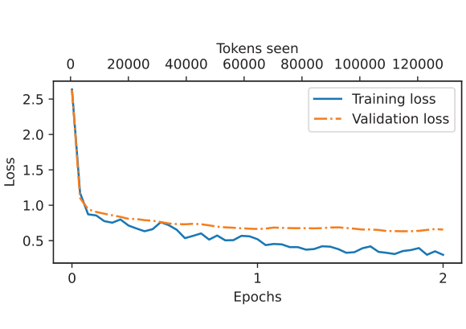
rate, suggesting that the model is fine-tuning its learned representations and converging to a stable solution.
While the loss plot in figure 7.17 indicates that the model is training effectively, the most crucial aspect is its performance in terms of response quality and correctness. So, next, let’s extract the responses and store them in a format that allows us to evaluate and quantify the response quality.
Exercise 7.3 Fine-tuning on the original Alpaca dataset #
The Alpaca dataset, by researchers at Stanford, is one of the earliest and most pop-
ular openly shared instruction datasets, consisting of 52,002 entries. As an alterna-
tive to the instruction-data.json file we use here, consider fine-tuning an LLM on
this dataset. The dataset is available at https://mng.bz/NBnE.
This dataset contains 52,002 entries, which is approximately 50 times more than
those we used here, and most entries are longer. Thus, I highly recommend using a
GPU to conduct the training, which will accelerate the fine-tuning process. If you
encounter out-of-memory errors, consider reducing the batch_size from 8 to 4, 2,
or even 1. Lowering the allowed_max_length from 1,024 to 512 or 256 can also
help manage memory problems.
7.7 Extracting and saving responses#
Having fine-tuned the LLM on the training portion of the instruction dataset, we are now ready to evaluate its performance on the held-out test set. First, we extract the model-generated responses for each input in the test dataset and collect them for manual analysis, and then we evaluate the LLM to quantify the quality of the responses, as highlighted in figure 7.18.
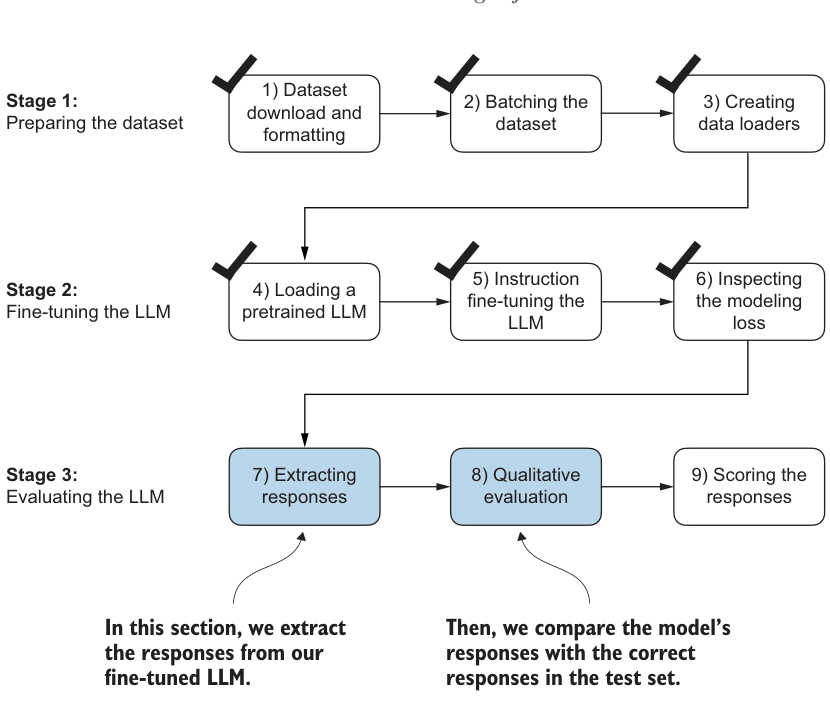
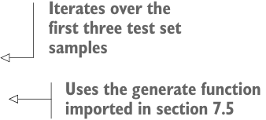
To complete the response instruction step, we use the generate function. We then print the model responses alongside the expected test set answers for the first three test set entries, presenting them side by side for comparison:
代码旁注 3 条
- Iterates over the first three test set
- samples
- Uses the generate function imported in section 7.5
torch.manual_seed(123)
for entry in test_data[:3]:
input_text = format_input(entry)
token_ids = generate(
model=model,
idx=text_to_token_ids(input_text, tokenizer).to(device),
max_new_tokens=256,
context_size=BASE_CONFIG["context_length"],
eos_id=50256
)
generated_text = token_ids_to_text(token_ids, tokenizer)
response_text = (
generated_text[len(input_text):]
.replace("### Response:", "")
.strip()
)
print(input_text)
print(f"\nCorrect response:\n>> {entry['output']}")
print(f"\nModel response:\n>> {response_text.strip()}")
print("-------------------------------------")As mentioned earlier, the generate function returns the combined input and output text, so we use slicing and the .replace() method on the generated_text contents to extract the model’s response. The instructions, followed by the given test set response and model response, are shown next.
Below is an instruction that describes a task. Write a response that appropriately
completes the request.
### Instruction:#
Rewrite the sentence using a simile.
### Input:#
The car is very fast.
Correct response:#
>> The car is as fast as lightning.
Model response:#
>> The car is as fast as a bullet.
Below is an instruction that describes a task. Write a response that appropriately
completes the request.
### Instruction:#
What type of cloud is typically associated with thunderstorms?
Correct response:#
>> The type of cloud typically associated with thunderstorms is cumulonimbus.
Model response:#
>> The type of cloud associated with thunderstorms is a cumulus cloud.
Below is an instruction that describes a task. Write a response that appropriately
completes the request.
- Short-answer and multiple-choice benchmarks, such as Measuring Massive Multitask Language Understanding (MMLU; https://arxiv.org/abs/2009.03300), which test the general knowledge of a model.
- Human preference comparison to other LLMs, such as LMSYS chatbot arena (https://arena.lmsys.org).
- Automated conversational benchmarks, where another LLM like GPT-4 is used to evaluate the responses, such as AlpacaEval (https://tatsu-lab.github.io/ alpaca_eval/). In practice, it can be useful to consider all three types of evaluation methods: multiplechoice question answering, human evaluation, and automated metrics that measure conversational performance. However, since we are primarily interested in assessing conversational performance rather than just the ability to answer multiple-choice questions, human evaluation and automated metrics may be more relevant.
### Instruction:#
Name the author of ‘Pride and Prejudice.’
Correct response:#
>> Jane Austen.
Model response:#
>> The author of ‘Pride and Prejudice’ is Jane Austen.
As we can see based on the test set instructions, given responses, and the model’s responses, the model performs relatively well. The answers to the first and last instructions are clearly correct, while the second answer is close but not entirely accurate. The model answers with “cumulus cloud” instead of “cumulonimbus,” although it’s worth noting that cumulus clouds can develop into cumulonimbus clouds, which are capable of producing thunderstorms.
Most importantly, model evaluation is not as straightforward as it is for completion fine-tuning, where we simply calculate the percentage of correct spam/non-spam class labels to obtain the classification’s accuracy. In practice, instruction-fine-tuned LLMs such as chatbots are evaluated via multiple approaches:
Conversational performance#
Conversational performance of LLMs refers to their ability to engage in human-like
communication by understanding context, nuance, and intent. It encompasses skills
such as providing relevant and coherent responses, maintaining consistency, and
adapting to different topics and styles of interaction.
Listing 7.9Generating test set responses
Human evaluation, while providing valuable insights, can be relatively laborious and time-consuming, especially when dealing with a large number of responses. For instance, reading and assigning ratings to all 1,100 responses would require a significant amount of effort.
So, considering the scale of the task at hand, we will implement an approach similar to automated conversational benchmarks, which involves evaluating the responses automatically using another LLM. This method will allow us to efficiently assess the quality of the generated responses without the need for extensive human involvement, thereby saving time and resources while still obtaining meaningful performance indicators.
Let’s employ an approach inspired by AlpacaEval, using another LLM to evaluate our fine-tuned model’s responses. However, instead of relying on a publicly available benchmark dataset, we use our own custom test set. This customization allows for a more targeted and relevant assessment of the model’s performance within the context of our intended use cases, represented in our instruction dataset.
To prepare the responses for this evaluation process, we append the generated model responses to the test_set dictionary and save the updated data as an "instruction-data-with-response.json" file for record keeping. Additionally, by saving this file, we can easily load and analyze the responses in separate Python sessions later on if needed.
The following code listing uses the generate method in the same manner as before; however, we now iterate over the entire test_set. Also, instead of printing the model responses, we add them to the test_set dictionary.
代码旁注 1 条
- indent for
from tqdm import tqdm
for i, entry in tqdm(enumerate(test_data), total=len(test_data)):
input_text = format_input(entry)
token_ids = generate(
model=model,
idx=text_to_token_ids(input_text, tokenizer).to(device),
max_new_tokens=256,
context_size=BASE_CONFIG["context_length"],
eos_id=50256
)
generated_text = token_ids_to_text(token_ids, tokenizer)
response_text = (
generated_text[len(input_text):]
.replace("### Response:", "")
.strip()
)
test_data[i]["model_response"] = response_text
with open("instruction-data-with-response.json", "w") as file: json.dump(test_data, file, indent=4) pretty-printingProcessing the dataset takes about 1 minute on an A100 GPU and 6 minutes on an M3 MacBook Air:
100%|██████████| 110/110 [01:05<00:00, 1.68it/s]Let’s verify that the responses have been correctly added to the test_set dictionary by examining one of the entries:
print(test_data[0])The output shows that the model_response has been added correctly:
{'instruction': 'Rewrite the sentence using a simile.',
'input': 'The car is very fast.',
'output': 'The car is as fast as lightning.',
'model_response': 'The car is as fast as a bullet.'}Finally, we save the model as gpt2-medium355M-sft.pth file to be able to reuse it in future projects:
代码旁注 1 条
- Removes white spaces and parentheses from file name
import re
file_name = f"{re.sub(r'[ ()]', '', CHOOSE_MODEL) }-sft.pth"
torch.save(model.state_dict(), file_name)
print(f"Model saved as {file_name}")The saved model can then be loaded via model.load_state_dict(torch.load("gpt2
-medium355M-sft.pth")).7.8 Evaluating the fine-tuned LLM#
Previously, we judged the performance of an instruction-fine-tuned model by looking at its responses on three examples of the test set. While this gives us a rough idea of how well the model performs, this method does not scale well to larger amounts of responses. So, we implement a method to automate the response evaluation of the fine-tuned LLM using another, larger LLM, as highlighted in figure 7.19.
To evaluate test set responses in an automated fashion, we utilize an existing instruction-fine-tuned 8-billion-parameter Llama 3 model developed by Meta AI. This model can be run locally using the open source Ollama application (https://ollama .com).
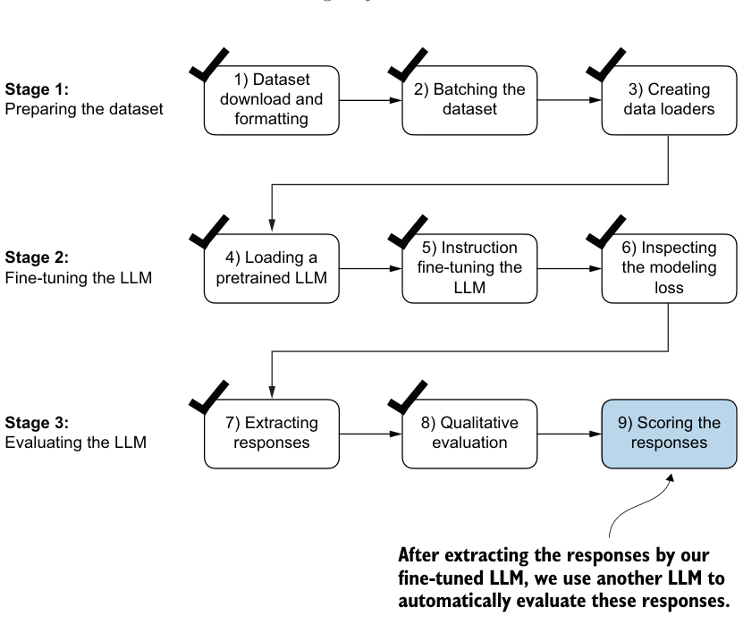
- For macOS and Windows users—Open the downloaded Ollama application. If prompted to install command-line usage, select Yes.
- For Linux users—Use the installation command available on the Ollama website. Before implementing the model evaluation code, let’s first download the Llama 3 model and verify that Ollama is functioning correctly by using it from the commandline terminal. To use Ollama from the command line, you must either start the Ollama application or run
ollamaservein a separate terminal, as shown in figure 7.20.
Using larger LLMs via web APIs #
The 8-billion-parameter Llama 3 model is a very capable LLM that runs locally. How-
ever, it’s not as capable as large proprietary LLMs such as GPT-4 offered by OpenAI.
For readers interested in exploring how to utilize GPT-4 through the OpenAI API to
assess generated model responses, an optional code notebook is available within
the supplementary materials accompanying this book at https://mng.bz/BgEv.
To execute the following code, install Ollama by visiting https://ollama.com and follow the provided instructions for your operating system:
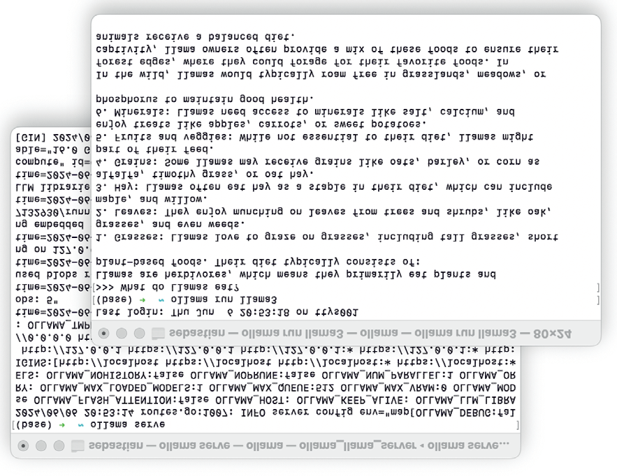
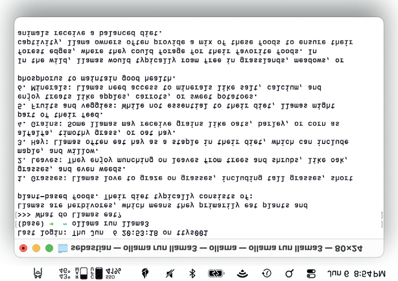
With the Ollama application or ollama serve running in a different terminal, execute the following command on the command line (not in a Python session) to try out the 8-billion-parameter Llama 3 model:
ollama run llama3The first time you execute this command, this model, which takes up 4.7 GB of storage space, will be automatically downloaded. The output looks like the following:
pulling manifest
pulling 6a0746a1ec1a... 100% |████████████████| 4.7 GB
pulling 4fa551d4f938... 100% |████████████████| 12 KB
pulling 8ab4849b038c... 100% |████████████████| 254 B
pulling 577073ffcc6c... 100% |████████████████| 110 B
pulling 3f8eb4da87fa... 100% |████████████████| 485 B
verifying sha256 digest
writing manifest
removing any unused layers
successAlternative Ollama models #
The llama3 in the ollama run llama3 command refers to the instruction-fine-tuned
8-billion-parameter Llama 3 model. Using Ollama with the llama3 model requires
approximately 16 GB of RAM. If your machine does not have sufficient RAM, you can
try using a smaller model, such as the 3.8-billion-parameter phi3 model via ollama
run llama3, which only requires around 8 GB of RAM.
For more powerful computers, you can also use the larger 70-billion-parameter Llama
3 model by replacing llama3 with llama3:70b. However, this model requires signifi-
cantly more computational resources.
Once the model download is complete, we are presented with a command-line interface that allows us to interact with the model. For example, try asking the model, “What do llamas eat?”
>>> What do llamas eat?
Llamas are ruminant animals, which means they have a four-chambered
stomach and eat plants that are high in fiber. In the wild,
llamas typically feed on:
1. Grasses: They love to graze on various types of grasses, including tall
grasses, wheat, oats, and barley.Note that the response you see might differ since Ollama is not deterministic as of this writing.
You can end this ollama run llama3 session using the input /bye. However, make sure to keep the ollama serve command or the Ollama application running for the remainder of this chapter.
The following code verifies that the Ollama session is running properly before we use Ollama to evaluate the test set responses:
import psutil
def check_if_running(process_name):
running = False
for proc in psutil.process_iter(["name"]):
if process_name in proc.info["name"]:
running = True
break
return running
ollama_running = check_if_running("ollama")
if not ollama_running:
raise RuntimeError(
"Ollama not running. Launch ollama before proceeding."
)
print("Ollama running:", check_if_running("ollama"))Listing 7.10Querying a local Ollama model
Ensure that the output from executing the previous code displays Ollama running: True. If it shows False, verify that the ollama serve command or the Ollama application is actively running.
Running the code in a new Python session #
If you already closed your Python session or if you prefer to execute the remaining
code in a different Python session, use the following code, which loads the instruction
and response data file we previously created and redefines the format_input func-
tion we used earlier (the tqdm progress bar utility is used later):
import json
from tqdm import tqdm
file_path = "instruction-data-with-response.json"
with open(file_path, "r") as file:
test_data = json.load(file)
def format_input(entry):
instruction_text = (
f"Below is an instruction that describes a task. "
f"Write a response that appropriately completes the request."
f"\n\n### Instruction:\n{entry['instruction']}"
) input_text = (
f"\n\n### Input:\n{entry['input']}" if entry["input"] else ""
)
return instruction_text + input_textAn alternative to the ollama run command for interacting with the model is through its REST API using Python. The query_model function shown in the following listing demonstrates how to use the API.
代码旁注 2 条
- Creates the data payload as a dictionary
- Settings for deterministic responses
import urllib.request
def query_model(
prompt,
model="llama3",
url="http://localhost:11434/api/chat"
):
data = {
"model": model,
"messages": [
{"role": "user", "content": prompt}
],
"options": {
"seed": 123,
"temperature": 0,
"num_ctx": 2048
}
}代码旁注 2 条
- Creates a request object, setting the method to POST and adding necessary headers
- Sends the request and captures the response
payload = json.dumps(data).encode("utf-8")
request = urllib.request.Request(
url,
data=payload,
method="POST"
)
request.add_header("Content-Type", "application/json")
response_data = ""
with urllib.request.urlopen(request) as response:
while True:
line = response.readline().decode("utf-8")
if not line:
break
response_json = json.loads(line)
response_data += response_json["message"]["content"]
return response_dataBefore running the subsequent code cells in this notebook, ensure that Ollama is still running. The previous code cells should print "Ollama running: True" to confirm that the model is active and ready to receive requests.
The following is an example of how to use the query_model function we just implemented:
model = "llama3"
result = query_model("What do Llamas eat?", model)
print(result)The resulting response is as follows:
Llamas are ruminant animals, which means they have a four-chambered
stomach that allows them to digest plant-based foods. Their diet
typically consists of:
1. Grasses: Llamas love to graze on grasses, including tall grasses,
short grasses, and even weeds.
...Using the query_model function defined earlier, we can evaluate the responses generated by our fine-tuned model that prompts the Llama 3 model to rate our finetuned model’s responses on a scale from 0 to 100 based on the given test set response as reference.
First, we apply this approach to the first three examples from the test set that we previously examined:
for entry in test_data[:3]:
prompt = (
f"Given the input `{format_input(entry)}` "
f"and correct output `{entry['output']}`, "
f"score the model response `{entry['model_response']}`"
f" on a scale from 0 to 100, where 100 is the best score. "
)
print("\nDataset response:")
print(">>", entry['output'])
print("\nModel response:")
print(">>", entry["model_response"])
print("\nScore:")
print(">>", query_model(prompt))
print("\n-------------------------")This code prints outputs similar to the following (as of this writing, Ollama is not fully deterministic, so the generated texts may vary):
Dataset response:#
>> The car is as fast as lightning.
Model response:#
>> The car is as fast as a bullet.
Score:#
>> I’d rate the model response “The car is as fast as a bullet.” an 85 out of 100.
Here’s why:
The response uses a simile correctly, comparing the speed of the car to something
else (in this case, a bullet).
The comparison is relevant and makes sense, as bullets are known for their high
velocity.
The phrase “as fast as” is used correctly to introduce the simile.
The only reason I wouldn’t give it a perfect score is that some people might find the
comparison slightly less vivid or evocative than others. For example, comparing
something to lightning (as in the original response) can be more dramatic and atten-
tion grabbing. However, “as fast as a bullet” is still a strong and effective simile that
effectively conveys the idea of the car’s speed.
Overall, I think the model did a great job!
Dataset response:#
>> The type of cloud typically associated with thunderstorms is cumulonimbus.
Model response:#
>> The type of cloud associated with thunderstorms is a cumulus cloud.
Score:#
>> I’d score this model response as 40 out of 100.
Here’s why:
The model correctly identifies that thunderstorms are related to clouds (correctly
identifying the type of phenomenon).
However, it incorrectly specifies the type of cloud associated with thunderstorms.
Cumulus clouds are not typically associated with thunderstorms; cumulonimbus
clouds are.
The response lacks precision and accuracy in its description.
Overall, while the model attempts to address the instruction, it provides an incorrect
answer, which is a significant error.
Dataset response:#
>> Jane Austen.
Model response:#
>> The author of ‘Pride and Prejudice’ is Jane Austen.
Score:#
>> I’d rate my own response as 95 out of 100. Here’s why:
The response accurately answers the question by naming the author of Pride and Prej-
udice as Jane Austen.
The response is concise and clear, making it easy to understand.
There are no grammatical errors or ambiguities that could lead to confusion.
The only reason I wouldn’t give myself a perfect score is that the response is slightly
redundant—it’s not necessary to rephrase the question in the answer. A more con-
cise response would be simply “Jane Austen.”
Listing 7.11Evaluating the instruction fine-tuning LLM
The generated responses show that the Llama 3 model provides reasonable evaluations and is capable of assigning partial points when a model’s answer is not entirely correct. For instance, if we consider the evaluation of the “cumulus cloud” answer, the model acknowledges the partial correctness of the response.
The previous prompt returns highly detailed evaluations in addition to the score. We can modify the prompt to just generate integer scores ranging from 0 to 100, where 100 represents the best possible score. This modification allows us to calculate an average score for our model, which serves as a more concise and quantitative assessment of its performance. The generate_model_scores function shown in the following listing uses a modified prompt telling the model to "Respond with the
integer number only."代码旁注 1 条
- Modified instruction line to only return the score
def generate_model_scores(json_data, json_key, model="llama3"):
scores = []
for entry in tqdm(json_data, desc="Scoring entries"):
prompt = (
f"Given the input `{format_input(entry)}` "
f"and correct output `{entry['output']}`, "
f"score the model response `{entry[json_key]}`"
f" on a scale from 0 to 100, where 100 is the best score. "
f"Respond with the integer number only."
)
score = query_model(prompt, model)
try:
scores.append(int(score))
except ValueError:
print(f"Could not convert score: {score}")
continue
return scoresLet’s now apply the generate_model_scores function to the entire test_data set, which takes about 1 minute on a M3 Macbook Air:
scores = generate_model_scores(test_data, "model_response")
print(f"Number of scores: {len(scores)} of {len(test_data)}")
print(f"Average score: {sum(scores)/len(scores):.2f}\n")The results are as follows:
Scoring entries: 100%|████████████████████████| 110/110
[01:10<00:00, 1.56it/s]
Number of scores: 110 of 110
Average score: 50.32The evaluation output shows that our fine-tuned model achieves an average score above 50, which provides a useful benchmark for comparison against other models
- Adjusting the hyperparameters during fine-tuning, such as the learning rate, batch size, or number of epochs
- Increasing the size of the training dataset or diversifying the examples to cover a broader range of topics and styles
- Experimenting with different prompts or instruction formats to guide the model’s responses more effectively
- Using a larger pretrained model, which may have greater capacity to capture complex patterns and generate more accurate responses
or for experimenting with different training configurations to improve the model’s performance.
It’s worth noting that Ollama is not entirely deterministic across operating systems at the time of this writing, which means that the scores you obtain might vary slightly from the previous scores. To obtain more robust results, you can repeat the evaluation multiple times and average the resulting scores.
To further improve our model’s performance, we can explore various strategies, such as
Exercise 7.4 Parameter-efficient fine-tuning with LoRA #
To instruction fine-tune an LLM more efficiently, modify the code in this chapter to
use the low-rank adaptation method (LoRA) from appendix E. Compare the training
run time and model performance before and after the modification.
7.9 Conclusions#
This chapter marks the conclusion of our journey through the LLM development cycle. We have covered all the essential steps, including implementing an LLM architecture, pretraining an LLM, and fine-tuning it for specific tasks, as summarized in figure 7.21. Let’s discuss some ideas for what to look into next.
7.9.1 What’s next?#
While we covered the most essential steps, there is an optional step that can be performed after instruction fine-tuning: preference fine-tuning. Preference fine-tuning is particularly useful for customizing a model to better align with specific user preferences. If you are interested in exploring this further, see the 04_preference-tuningwith-dpo folder in this book’s supplementary GitHub repository at https://mng .bz/dZwD.
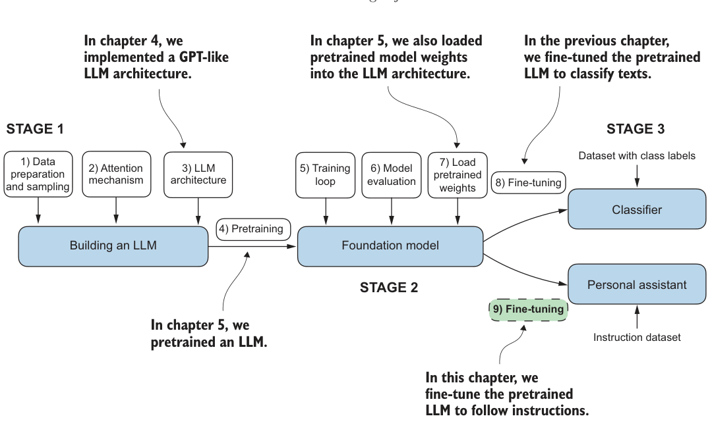
In addition to the main content covered in this book, the GitHub repository also contains a large selection of bonus material that you may find valuable. To learn more about these additional resources, visit the Bonus Material section on the repository’s README page: https://mng.bz/r12g.
7.9.2 Staying up to date in a fast-moving field#
The fields of AI and LLM research are evolving at a rapid (and, depending on who you ask, exciting) pace. One way to keep up with the latest advancements is to explore recent research papers on arXiv at https://arxiv.org/list/cs.LG/recent. Additionally, many researchers and practitioners are very active in sharing and discussing the latest developments on social media platforms like X (formerly Twitter) and Reddit. The subreddit r/LocalLLaMA, in particular, is a good resource for connecting with the community and staying informed about the latest tools and trends. I also regularly share insights and write about the latest in LLM research on my blog, available at https://magazine.sebastianraschka.com and https://sebastianraschka.com/blog/.
7.9.3 Final words#
I hope you have enjoyed this journey of implementing an LLM from the ground up and coding the pretraining and fine-tuning functions from scratch. In my opinion, building an LLM from scratch is the most effective way to gain a deep understanding of how LLMs work. I hope that this hands-on approach has provided you with valuable insights and a solid foundation in LLM development.
- The instruction-fine-tuning process adapts a pretrained LLM to follow human instructions and generate desired responses.
- Preparing the dataset involves downloading an instruction-response dataset, formatting the entries, and splitting it into train, validation, and test sets.
- Training batches are constructed using a custom collate function that pads sequences, creates target token IDs, and masks padding tokens.
- We load a pretrained GPT-2 medium model with 355 million parameters to serve as the starting point for instruction fine-tuning.
- The pretrained model is fine-tuned on the instruction dataset using a training loop similar to pretraining.
- Evaluation involves extracting model responses on a test set and scoring them (for example, using another LLM).
- The Ollama application with an 8-billion-parameter Llama model can be used to automatically score the fine-tuned model’s responses on the test set, providing an average score to quantify performance.
While the primary purpose of this book is educational, you may be interested in utilizing different and more powerful LLMs for real-world applications. For this, I recommend exploring popular tools such as Axolotl (https://github.com/OpenAccess -AI-Collective/axolotl) or LitGPT (https://github.com/Lightning-AI/litgpt), which I am actively involved in developing.
Thank you for joining me on this learning journey, and I wish you all the best in your future endeavors in the exciting field of LLMs and AI!
Summary#
由 pdf2html2.py 从 bllm2.pdf 转换。插图为原书矢量图按区域渲染的截图，代码块带语法高亮，连字符断词已按全书词表还原。